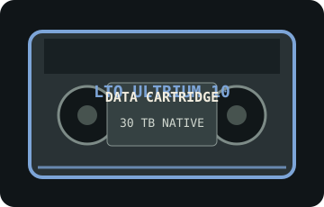

[ REMOVABLE TAPE // MODEL-SPECIFIC MEDIA ]
FUJIFILM LTO Ultrium 10 30 TB Data Cartridge (LTO FB UL-10 30.0T)
FUJIFILM LTO Ultrium 10 removable data cartridge. This record covers the media model only; the drive, host interface, software, and recording workflow are separate equipment.

MEDIA ONLY: FUJIFILM LTO Ultrium 10 30 TB Data Cartridge (LTO FB UL-10 30.0T). This is standard rewritable LTO media. Write protection and erase/write operations are handled by a compatible drive and host software; preserve separate verified copies. Host connectivity belongs to the drive, not the cartridge.
Capacity, generation, interface and compatibility
| Manufacturer model | LTO FB UL-10 30.0T |
|---|---|
| Format / generation | LTO Ultrium 10, half-inch magnetic tape cartridge; rewritable media. |
| Native capacity | 30 TB. Compressed-capacity estimates are workload- and software-dependent and are not guaranteed storage capacity. |
| Interface | The cartridge has no electrical host connector. An LTO drive provides the host interface (commonly SAS or Fibre Channel, varying by drive model); confirm the drive, HBA, cable, firmware, and system support as a matched chain. |
| Drive compatibility | FUJIFILM lists this generation for read/write use in LTO-10 drives only (the 30 TB LTO-10 cartridge is not backward-compatible with LTO-9 or earlier drives). Confirm the exact drive manual and firmware before use. Do not infer compatibility from the cartridge shell or generation number alone. |
| Write mode / handling | This is standard rewritable LTO media. Write protection and erase/write operations are handled by a compatible drive and host software; preserve separate verified copies. Keep the cartridge in its case, label the model and generation, avoid touching tape or drive-contact areas, and follow the selected drive's acclimation, cleaning, and environmental guidance. |
Identification and preservation
LTO Ultrium generation 10; rewritable magnetic tape cartridge, with 30 TB native capacity and exact Fujifilm model designation LTO FB UL-10 30.0T. The exact model string is included because capacity and read/write behavior depend on both the tape generation and whether the medium is WORM. Check the cartridge label and its internal memory information through a supported drive; retain the original packaging and acquisition details where available.
- Use the manufacturer's media/drive compatibility matrix and the drive manual rather than assuming cross-generation support. A drive may read or write older generations differently, and this listing does not promise interchange across vendors or firmware revisions.
- Keep valuable data in multiple independent copies, verify checksums and restores, and plan migration before compatible drives or service parts become unavailable.
Sources and standards
- FUJIFILM — LTO Ultrium data cartridge specificationsFujifilm model and specification table lists the exact model, native capacity, and supported media/drive combinations.
- FUJIFILM LTO Ultrium 10 (30 TB) Catalog [PDF]Fujifilm generation-specific product sheet; verify the generation and capacity on the cartridge label and drive manual.
- LTO Program — generation compatibility and LTFS overviewLTO Program overview of generation compatibility; consult the drive manufacturer for exact media-generation support.
Nominal capacity is native, uncompressed capacity. The Fujifilm compatibility chart is specific to its media/drive range; check the precise third-party drive documentation before interchange.